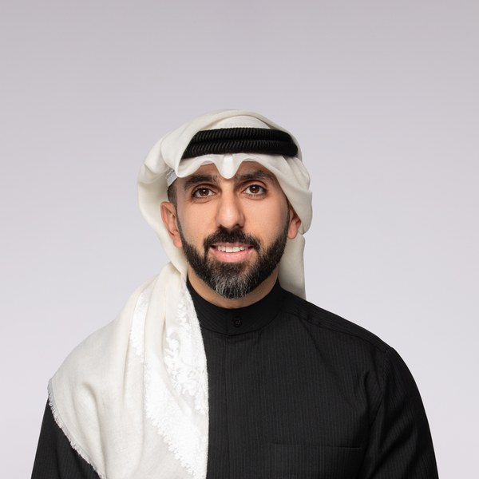

OUR TEAM
فريق كاش كلينيك
فريق متخصّص يجمع بين الخبرة المالية، الإرشاد النفسي، والعمل الميداني مع الجمعيات. نُفهم أرقامك ونُفهم قصتك.

غالية
المؤسِّسة الرئيسية · قسم العائلة
قائدة قسم العائلة الخليجية والوجه الرئيسي لكاش كلينيك. تخصصها الإرشاد المالي للأزواج كوحدة عائلية، وقيادة المحتوى التخصصي.

سارة
مستشارة · قسم العائلة
شريكة قسم العائلة، تركّز على الجانب السلوكي والإرشاد العائلي للأزواج، ومتابعة الحالات بين الجلسات.

حسن
المتخصص · قسم رواد الأعمال
يقود قسم رواد الأعمال بتخصص في إدارة الكاش لرواد الأعمال – للأزمات والنمو على مستوى السوق الخليجي.

أمينة
العمليات والتنسيق
تُدير عمليات الجدولة والتنسيق والمتابعة مع العملاء والشركاء، ونقطة الاتصال الإدارية الأولى.
* كاش كلينيك = الكيان الموحّد. كل عضو يدعم محتوى الشركة من حسابه الشخصي مع الحفاظ على الهوية المؤسسية.